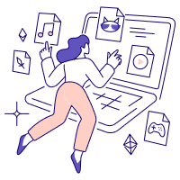

I’m a research-oriented designer who loves to
simplify the complex, visualize data, and lead
projects.
Across education settings I’ve also designed better service experiences for students who are using the
learning platforms and campus systems. I have also led design on mobile and web products for online
cosumers in multiple e-commerce projects; here’s a little about how I work.

I use design research
to learn about people, clarify problems,
and built a strategy:
what we should do, and why.
My purpose in life is to
understand people behind the technology.
Where others see the complex, often confusing, I see a fascinating human puzzle waiting to be solved
Where others see the complex, often confusing, I see a fascinating human puzzle waiting to be solved
I visualize
data and research findings to
help building a common understanding.
I specialize in understanding diverse user needs across cultural contexts.
Multi-cultural user research and diversity
are central to my expertise.
From sociology and gender studies,
I bring deep compassion for user needs and pains.
I enjoy working in a team.
Brainstorming and collaboration are key to my creativity.
You might want to: